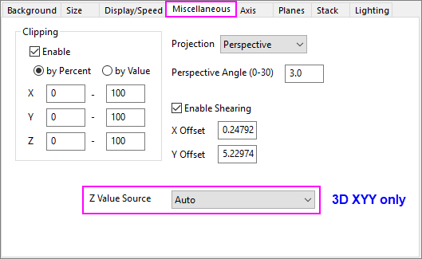
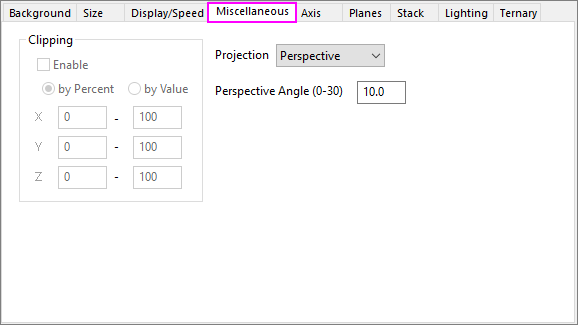

Diese Registerkarte ist verfügbar, wenn der 3D-Diagrammlayer im linken Bereich der Seite Details Zeichnung ausgewählt ist. Auf dieser Registerkarte können Sie Operationen wie Abschneiden, Projektion und Verschieben steuern.
|  |
| Registerkarte Sonstiges für 3D-OpenGL-Diagramme im kartesischen Koordinatensystem |
|  |
| Registerkarte Sonstiges für 3D-OpenGL-Diagramme im kartesischen Koordinatensystem |
Diese Gruppe steuert das Abschneiden von X-, Y- und Z-Daten. Das Abschneiden begrenzt die Anzeige der Daten auf den Raum, der durch die Achsenskalierungswerte definiert wird. Diese Gruppe wird für ternäre 3D-Diagramme ausgegraut.
| Aktivieren |
Aktivieren Sie dieses Kontrollkästchen, um das Abschneiden von XYZ-Daten zu aktivieren. Ist dieses Kontrollkästchen aktiviert, werden nur die XYZ-Daten, die zwischen Anfangs- und Endwerten der Achsenskala liegen, auf dem Diagramm angezeigt. |
|---|---|
| Nach Prozent |
Legen Sie den Datenanzeigebereich in den X-, Y- bzw. Z-Dimensionen fest. Standard ist 0 - 100. Dies bedeutet, dass 100 % der Daten, die zwischen den Achsenwerten Von und Bis liegen (bestimmt durch die Werte von Maximum und Minimum innerhalb einer gegebenen Dimension), angezeigt werden. Falls die Anfangsprozentangabe kleiner ist als 0 oder größer als 100, werden die Punkte, die sich außerhalb der Achsenwerte für Von und Bis befinden, in der Grafik angezeigt. |
| Nach Wert |
Legen Sie den Datenanzeigebereich in den X-, Y- bzw. Z-Dimensionen fest. Standard sind die Achsenwerte Von und Bis (bestimmt durch die Werte für Maximum und Minimum in einer gegebenen Dimension). Falls die Anfangs- und Endwerte kleiner oder größer als die Werte von Minimum und Maximum in den X-,Y- oder Z-Dimensionen sind, werden Punkte, die außerhalb der Achsenwerte für Von und Bis liegen, womöglich in der Grafik angezeigt. |
Diese Auswahlliste wird verwendet, um die Projektion des 3D-Diagramms festzulegen.
Zusätzlich zur Drehung einer 3D-Diagramm können Sie den perspektivischen Winkel ändern. Dieses Bearbeitungsfeld ist nur verfügbar, wenn die Auswahlliste Projektion auf Perspektivisch gesetzt ist.
Wenn Sie den Perspektivwinkel ändern, ändern Sie den effektiven Abstand zum Beobachtungspunkt. Geben Sie in das Textfeld Perspektivischer Winkel (in Grad) den gewünschten Winkel ein. Dabei sind Sie auf einen Bereich von 0 bis 30 Grad beschränkt. Sie können auch die Symbolleiste 3D-Drehung verwenden, um den perspektivischen Winkel zu ändern.
Diese Gruppe ist nicht für 3D-Ternärdiagramme verfügbar.
Aktivieren Sie das Kontrollkästchen Verschieben aktivieren, um den X-Versatz und Y/Z-Versatz festzulegen, mit dem das 3D-Diagramm in X/Y- oder X/Z-Richtung verschoben wird (Bei 3D-XYY-Diagrammen können Sie den X- und Y-Versatz bestimmen; bei 3D-XYZ-/Matrix-Diagrammen können Sie den X- und Z-Versatz festlegen.). Der Versatzwert ist der Prozentsatz der Verschiebung in X/Y- oder X/Z-Richtung. Beispielweise verschiebt ein X-Versatz = -100 die hintere X-Achse horizontal nach rechts bis zu einer Distanz von 100% der Länge der X-Achse.
Nach Aktivierung dieses Kontrollkästchens befindet sich die Schaltfläche Schief auf der Symbolleiste der 3D-OpenGL-Diagramme, die angezeigt wird, wenn Sie auf das Diagramm klicken. Wenn Sie dieses Hilfsmittel auf Ihrem Diagramm verwenden, können Sie die Versatzwerte im Dialog aktualisieren.
Beachten Sie, dass dieses Bedienelement nicht für ternäre 3D-Oberflächendiagramme verfügbar ist.
Diese Option ist nur für 3D-XYY-Diagramme verfügbar und entspricht der Option auf der Registerkarte Wasserfall für 2D-Wasserfalldiagramme.